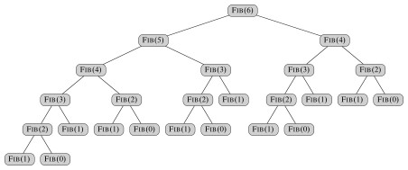

Assuming 1 unit of work per vertex, and we have already determined (previous exercise) that work T1 = 17 and span T∞ = 8, then ...
Parallelism T1 / T∞= 17/8 = 2.125.
We can evaluate the prospects for speedup for P-Fib(4) (n=4) under the three perspectives:
For example, with P=4 the slackness is (T1 / T∞)/P = 2.125/4 = 0.53125. This is less than 1 so we have more processors than we can make use of.
Note that these specific numbers are for P-Fib(4) (n=4) only: further analysis would be needed for the general case. How would the ratios change for higher n? Consider this graph for P-Fib(6)
How is the span increasing? How are the number of vertices increasing? Do you expect the paralleism to increase, decrease, or stay the same for larger n?
The next section gives us a general way to analyze this.